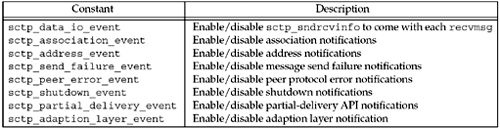

| [ Team LiB ] |
|
7.10 SCTP Socket OptionsThe relatively large number of socket options for SCTP (17 at present writing) reflects the finer grain of control SCTP provides to the application developer. We specify the level as IPPROTO_SCTP. Several options used to get information about SCTP require that data be passed into the kernel (e.g., association ID and/or peer address). While some implementations of getsockopt support passing data both into and out of the kernel, not all do. The SCTP API defines a sctp_opt_info function (Section 9.11) that hides this difference. On systems on which getsockopt does support this, it is simply a wrapper around getsockopt. Otherwise, it performs the required action, perhaps using a custom ioctl or a new system call. We recommend always using sctp_opt_info when retrieving these options for maximum portability. These options are marked with a dagger ( SCTP_ADAPTION_LAYER Socket OptionDuring association initialization, either endpoint may specify an adaption layer indication. This indication is a 32-bit unsigned integer that can be used by the two applications to coordinate any local application adaption layer. This option allows the caller to fetch or set the adaption layer indication that this endpoint will provide to peers. When fetching this value, the caller will only retrieve the value the local socket will provide to all future peers. To retrieve the peer's adaption layer indication, an application must subscribe to adaption layer events. SCTP_ASSOCINFO Socket OptionThe SCTP_ASSOCINFO socket option can be used for three purposes: (i) to retrieve information about an existing association, (ii) to change the parameters of an existing association, and/or (iii) to set defaults for future associations. When retrieving information about an existing association, the sctp_opt_info function should be used instead of getsockopt. This option takes as input the sctp_assocparams structure.
struct sctp_assocparams {
sctp_assoc_t sasoc_assoc_id;
u_int16_t sasoc_asocmaxrxt;
u_int16_t sasoc_number_peer_destinations;
u_int32_t sasoc_peer_rwnd;
u_int32_t sasoc_local_rwnd;
u_int32_t sasoc_cookie_life;
};
These fields have the following meaning:
We will provide advice on tuning the value of sasoc_asocmaxrxt for performance in Section 23.11. The sasoc_cookie_life can be reduced for greater protection against cookie replay attacks but less robustness to network delay during association initiation. The other values are useful for debugging. SCTP_AUTOCLOSE Socket OptionThis option allows us to fetch or set the autoclose time for an SCTP endpoint. The autoclose time is the number of seconds an SCTP association will remain open when idle. Idle is defined by the SCTP stack as neither endpoint sending or receiving user data. The default is for the autoclose function to be disabled. The autoclose option is intended to be used in the one-to-many-style SCTP interface (Chapter 9). When this option is set, the integer passed to the option is the number of seconds before an idle connection should be closed; a value of 0 disables autoclose. Only future associations created by this endpoint will be affected by this option; existing associations retain their current setting. Autoclose can be used by a server to force the closing of idle associations without the server needing to maintain additional state. A server using this feature needs to carefully assess the longest idle time expected on all its associations. Setting the autoclose value smaller than needed results in the premature closing of associations. SCTP_DEFAULT_SEND_PARAM Socket OptionSCTP has many optional send parameters that are often passed as ancillary data or used with the sctp_sendmsg function call (which is often implemented as a library call that passes ancillary data for the user). An application that wishes to send a large number of messages, all with the same parameters, can use this option to set up the default parameters and thus avoid using ancillary data or the sctp_sendmsg call. This option takes as input the sctp_sndrcvinfo structure.
struct sctp_sndrcvinfo {
u_int16_t sinfo_stream;
u_int16_t sinfo_ssn;
u_int16_t sinfo_flags;
u_int32_t sinfo_ppid;
u_int32_t sinfo_context;
u_int32_t sinfo_timetolive;
u_int32_t sinfo_tsn;
u_int32_t sinfo_cumtsn;
sctp_assoc_t sinfo_assoc_id;
};
These fields are defined as follows:
Note that all default settings will only affect messages sent without their own sctp_sndrcvinfo structure. Any send that provides this structure (e.g., sctp_sendmsg or sendmsg function with ancillary data) will override the default settings. Besides setting the default values, this option may be used to retrieve the current default parameters by using the sctp_opt_info function. SCTP_DISABLE_FRAGMENTS Socket OptionSCTP normally fragments any user message that does not fit in a single SCTP packet into multiple DATA chunks. Setting this option disables this behavior on the sender. When disabled by this option, SCTP will return the error EMSGSIZE and not send the message. The default behavior is for this option to be disabled; SCTP will normally fragment user messages. This option may be used by applications that wish to control message sizes, ensuring that every user application message will fit in a single IP packet. An application that enables this option must be prepared to handle the error case (i.e., its message was too big) by either providing application-layer fragmentation of the message or a smaller message. SCTP_EVENTS Socket OptionThis socket option allows a caller to fetch, enable, or disable various SCTP notifications. An SCTP notification is a message that the SCTP stack will send to the application. The message is read as normal data, with the msg_flags field of the recvmsg function being set to MSG_NOTIFICATION. An application that is not prepared to use either recvmsg or sctp_recvmsg should not enable events. Eight different types of events can be subscribed to by using this option and passing an sctp_event_subscribe structure. Any value of 0 represents a non-subscription and a value of 1 represents a subscription. The sctp_event_subscribe structure takes the following form:
struct sctp_event_subscribe {
u_int8_t sctp_data_io_event;
u_int8_t sctp_association_event;
u_int8_t sctp_address_event;
u_int8_t sctp_send_failure_event;
u_int8_t sctp_peer_error_event;
u_int8_t sctp_shutdown_event;
u_int8_t sctp_partial_delivery_event;
u_int8_t sctp_adaption_layer_event;
};
Figure 7.17 summarizes the various events. Further details on notifications can be found in Section 9.14. Figure 7.17. SCTP event subscriptions. SCTP_GET_PEER_ADDR_INFO Socket OptionThis option retrieves information about a peer address, including the congestion window, smoothed RTT and MTU. This option may only be used to retrieve information about a specific peer address. The caller provides a sctp_paddrinfo structure with the spinfo_address field filled in with the peer address of interest, and should use sctp_opt_info instead of getsockopt for maximum portability. The sctp_paddrinfo structure has the following format:
struct sctp_paddrinfo {
sctp_assoc_t spinfo_assoc_id;
struct sockaddr_storage spinfo_address;
int32_t spinfo_state;
u_int32_t spinfo_cwnd;
u_int32_t spinfo_srtt;
u_int32_t spinfo_rto;
u_int32_t spinfo_mtu;
};
The data returned to the caller provides the following:
One interesting use for this option is to translate an IP address structure into an association identification that can be used in other calls. We will illustrate the use of this socket option in Chapter 23. Another possibility is for the application to track performance to each address of a multihomed peer and update the primary address of the association to the peer's best address. These values are also useful for logging and debugging. SCTP_I_WANT_MAPPED_V4_ADDR Socket OptionThis flag can be used to enable or disable IPv4-mapped addresses on an AF_INET6-type socket. Note that when enabled (which is the default behavior), all IPv4 addresses will be mapped to a IPv6 address before sending to the application. If this option is disabled, the SCTP socket will not map IPv4 addresses and will instead pass them as a sockaddr_in structure. SCTP_INITMSG Socket OptionThis option can be used to get or set the default initial parameters used on an SCTP socket when sending out the INIT message. The option uses the sctp_initmsg structure, which is defined as:
struct sctp_initmsg {
uint16_t sinit_num_ostreams;
uint16_t sinit_max_instreams;
uint16_t sinit_max_attempts;
uint16_t sinit_max_init_timeo;
};
These fields are defined as follows:
Note that when setting these fields, any value set to 0 will be ignored by the SCTP socket. A user of the one-to-many-style socket (described in Section 9.2) may also pass an sctp_initmsg structure in ancillary data during implicit association setup. SCTP_MAXBURST Socket OptionThis socket option allows the application to fetch or set the maximum burst size used when sending packets. When an SCTP implementation sends data to a peer, no more than SCTP_MAXBURST packets are sent at once to avoid flooding the network with packets. An implementation may apply this limit by either: (i) reducing its congestion window to the current flight size plus the maximum burst size times the path MTU, or (ii) using this value as a separate micro-control, sending at most maximum burst packets at any single send opportunity. SCTP_MAXSEG Socket OptionThis socket option allows the application to fetch or set the maximum fragment size used during SCTP fragmentation. This option is similar to the TCP option TCP_MAXSEG described in Section 7.9. When an SCTP sender receives a message from an application that is larger than this value, the SCTP sender will break the message into multiple pieces for transport to the peer endpoint. The size that the SCTP sender normally uses is the smallest MTU of all addresses associated with the peer. This option overrides this value downward to the value specified. Note that the SCTP stack may fragment a message at a smaller boundary than requested by this option. This smaller fragmentation will occur when one of the paths to the peer endpoint has a smaller MTU than the value requested in the SCTP_MAXSEG option. This value is an endpoint-wide setting and may affect more than one association in the one-to-many interface style. SCTP_NODELAY Socket OptionIf set, this option disables SCTP's Nagle algorithm. This option is OFF by default (i.e., the Nagle algorithm is ON by default). SCTP's Nagle algorithm works identically to TCP's except that it is trying to coalesce multiple DATA chunks as opposed to simply coalescing bytes on a stream. For a further discussion of the Nagle algorithm, see TCP_MAXSEG. SCTP_PEER_ADDR_PARAMS Socket OptionThis socket option allows an application to fetch or set various parameters on an association. The caller provides the sctp_paddrparams structure, filling in the association identification. The sctp_paddrparams structure has the following format:
struct sctp_paddrparams {
sctp_assoc_t spp_assoc_id;
struct sockaddr_storage spp_address;
u_int32_t spp_hbinterval;
u_int16_t spp_pathmaxrxt;
};
These fields are defined as follows:
SCTP_PRIMARY_ADDR Socket OptionThis socket option fetches or sets the address that the local endpoint is using as primary. The primary address is used, by default, as the destination address for all messages sent to a peer. To set this value, the caller fills in the association identification and the peer's address that should be used as the primary address. The caller passes this information in a sctp_setprim structure, which is defined as:
struct sctp_setprim {
sctp_assoc_t ssp_assoc_id;
struct sockaddr_storage ssp_addr;
};
These fields are defined as follows:
Note that retrieving the value of this option on a one-to-one socket that has only one local address associated with it is the same as calling getsockname. SCTP_RTOINFO Socket OptionThis socket option can be used to fetch or set various RTO information on a specific association or the default values used by this endpoint. When fetching, the caller should use sctp_opt_info instead of getsockopt for maximum portability. The caller provides a sctp_rtoinfo structure of the following form:
struct sctp_rtoinfo {
sctp_assoc srto_assoc_id;
uint32_t srto_initial;
uint32_t srto_max;
uint32_t srto_min;
};
These fields are defined as follows:
A value of 0 for srto_initial, srto_max, or srto_min indicates that the default value currently set should not be changed. All time values are expressed in milliseconds. We provide guidance on setting these timers for performance in Section 23.11. SCTP_SET_PEER_PRIMARY_ADDR Socket OptionSetting this option causes a message to be sent that requests that the peer set the specified local address as its primary address. The caller provides an sctp_setpeerprim structure and must fill in both the association identification and a local address to request the peer mark as its primary. The address provided must be one of the local endpoint's bound addresses. The sctp_setpeerprim structure is defined as follows:
struct sctp_setpeerprim {
sctp_assoc_t sspp_assoc_id;
struct sockaddr_storage sspp_addr;
};
These fields are defined as follows:
This feature is optional, and must be supported by both endpoints to operate. If the local endpoint does not support the feature, an error of EOPNOTSUPP will be returned to the caller. If the remote endpoint does not support the feature, an error of EINVAL will be returned to the caller. Note that this value may only be set and cannot be retrieved. SCTP_STATUS Socket OptionThis socket option will retrieve the current state of an SCTP association. The caller should use sctp_opt_info instead of getaddrinfo for maximum portability. The caller provides an sctp_status structure, filling in the association identification field, sstat_assoc_id. The structure will be returned filled in with the information pertaining to the requested association. The sctp_status structure has the following format:
struct sctp_status {
sctp_assoc_t sstat_assoc_id;
int32_t sstat_state;
u_int32_t sstat_rwnd;
u_int16_t sstat_unackdata;
u_int16_t sstat_penddata;
u_int16_t sstat_instrms;
u_int16_t sstat_outstrms;
u_int32_t sstat_fragmentation_point;
struct sctp_paddrinfo sstat_primary;
};
These fields are defined as follows:
These values are useful for diagnostics and for determining the characteristics of the session; for example, the sctp_get_no_strms function in Section 10.2 will use the sstat_outstrms member to determine how many streams are available for outbound use. A low sstat_rwnd and/or a high sstat_unackdata value can be used to determine that the peer's receive socket buffer is becoming full, which can be used as a cue to the application to slow down transmission if possible. The sstat_fragmentation_point can be used by some applications to reduce the number of fragments that SCTP has to create, by sending smaller application messages. |
| [ Team LiB ] |
|
 ) in
) in